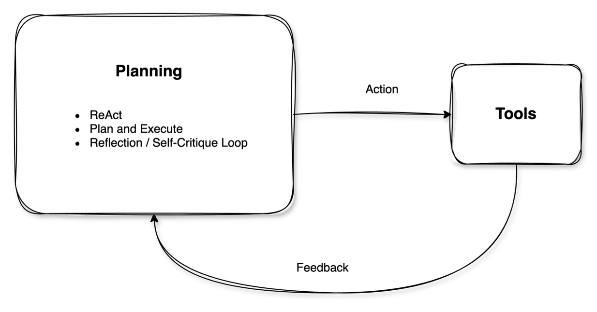
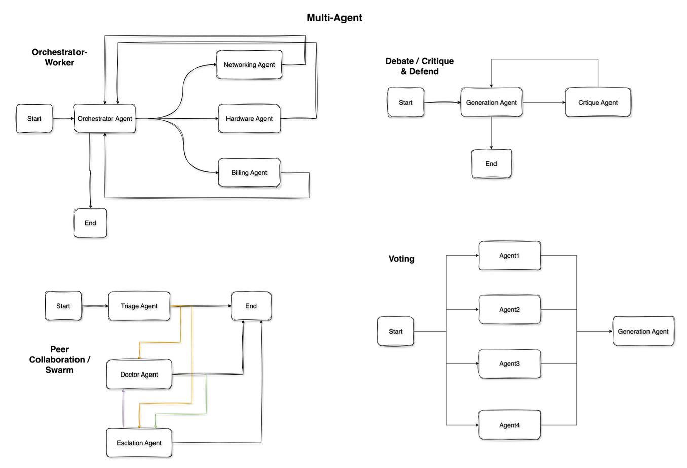

Technical
Agent Design Patterns
Core architectural patterns for building reliable, scalable, and maintainable AI agent systems.
Below is a higher-level breakdown of agent design patterns in two big categories: Single-Agent and Multi-Agent.
Each pattern includes:
- When/Why It's Used: Typical scenarios or motivations
- How It Works: Basic structure/diagram
- Real-World or Example Use Cases: Industry or enterprise examples (aligned with actual usage, not just theory)

I. Single-Agent Patterns
Single-agent patterns involve one AI/LLM "brain" responding to user input. Under the hood, it may still call external APIs or maintain internal memory, but logically we have one agent orchestrating all decisions.
1. Chain-of-Thought (CoT) / ReAct-Style Reasoning
When/Why It's Used:
- To improve reasoning by thinking step-by-step rather than responding in a single shot
- Especially useful for complex or multi-step queries (e.g., math, logical deduction)
How It Works (Diagram):
[User Query]
↓
Agent uses a "chain-of-thought" or ReAct style:
1) Think step by step (reasoning trace)
2) Conclude final answer
↓
Agent provides final answer to userIn ReAct, the chain-of-thought is intermixed with actions/tool calls (Reason + Act + Observe pattern).

Example Use Cases:
- Customer Q&A: Handling complicated questions by breaking down each sub-question.
- Decision Support: Finance or insurance queries where step-by-step reasoning is crucial.
- Research Summaries: Summarizing or synthesizing data with more logical consistency.
2. Tool Use / Function Calling
When/Why It's Used:
- The agent needs external knowledge or actions beyond its training data (e.g., real-time info, DB queries, code execution).
- Reduces hallucinations and ensures up-to-date or accurate info by deferring to specialized tools.
How It Works (Diagram):
[User Request]
↓
Agent decides if a tool is needed (Tool1, Tool2, etc.)
↓
Agent invokes Tool via function call / API
↓
Tool returns data
↓
Agent integrates results into final output
↓
Return final response to userExample Use Cases:
- Enterprise Support Bots: Querying a knowledge base or CRM system with APIs to get a specific customer's data.
- E-commerce Assistants: Checking product inventory or shipping status via real-time APIs.
- Business Analytics: Running SQL queries or code snippets to gather analytics from data lakes.
3. Plan-and-Execute / Planner-Executor
When/Why It's Used:
- Tasks require multiple coordinated steps (e.g. multi-phase content creation, structured decision-making, or data gathering and analysis).
- Instead of the agent generating everything in one pass, it first plans out steps, then executes them in turn.
How It Works (Diagram):
[User Goal]
↓
Agent (Planner) enumerates steps → (Step 1, Step 2, ...)
↓
Agent (Executor) or same LLM does each step
↓
Collect all step results
↓
Produce final output/answer(Sometimes the planner and executor are literally separate components; sometimes it's one LLM playing both roles in separate phases.)
Example Use Cases:
- Marketing Content Generation: Outline => draft => refine => finalize.
- Software Development: High-level plan => generate code => test => debug => final code.
- Data Analysis: Stepwise approach to retrieving data, cleaning, analyzing, and summarizing.
4. Reflection / Self-Critique Loop
When/Why It's Used:
- The agent aims for higher accuracy by iteratively critiquing and refining its output.
- Good for high-stakes tasks or where answers need thorough checking.
How It Works (Diagram):
[User Question]
↓
Agent generates initial answer
↓
Agent reviews (reflects on) that answer
↓
Agent refines the answer if errors or omissions are found
↻ (Repeat reflection as needed)
↓
Return final improved answer to userSometimes one agent does both "work" and "critique"; sometimes there is an internal second pass that checks correctness or clarity.
Example Use Cases:
- Content Proofreading: Agents produce an initial draft, then do a "second pass" to find grammar errors or unclear text.
- Legal/Compliance Summaries: Extra scrutiny to ensure compliance with regulations.
- Financial Planning: Checking math or assumptions in a budget or forecast.

II. Multi-Agent Patterns
Multi-agent patterns involve more than one LLM-based agent collaborating (or sometimes debating) to accomplish a task. Each agent might have a specialized role or skillset. These patterns can yield better accuracy, modularity, or coverage of complex workflows, but also add orchestration overhead.

1. Manager-Worker (Orchestrator-Executor)
When/Why It's Used:
- You need a master coordinator agent that delegates tasks to worker agents.
- Common if tasks have distinct sub-domains: e.g., one worker is "Sales Bot," another is "Tech Support Bot," etc.
- The manager handles high-level decisions and aggregates final results.
How It Works (Diagram):
┌─────[Worker 1]─────┐
[User Request] →─┤ ├→ [Manager Agent] → Final Answer
├─────[Worker 2]─────┤
└─────[Worker 3]─────┘The Manager receives the user request, figures out which Worker(s) to call, collects or merges their responses, and returns a final output.
Example Use Cases:
- Enterprise Chatbots: A single chat endpoint that orchestrates domain-specific modules: shipping/tracking, billing, product knowledge, etc.
- Automated Customer Triage: The manager decides if the question is about refunds (send to Worker 1) or about advanced tech support (Worker 2).
- Large Report Generation: The manager splits a big doc into sections, each handled by a specialized writer agent.
2. Peer Collaboration / Co-Agents
When/Why It's Used:
- Agents have different areas of expertise but no strict "boss."
- They communicate results to each other, coordinate to achieve a final outcome.
- Useful when tasks require multiple expert perspectives or synergy (e.g., "Designer" agent + "Engineer" agent + "Tester" agent).
How It Works (Diagram):
[Agent A] <----> [Agent B] <----> [Agent C]
\ | /
\-------+-------/
Shared Knowledge
(coordinating to produce final result)Agents share intermediate reasoning or partial outputs. They can "ask" each other for help or data.
Example Use Cases:
- Virtual Specialist Teams: In content creation, a "Writer" agent and "Editor" agent exchange feedback. Or in software dev, "Frontend Dev" agent and "Backend Dev" agent coordinate.
- Multi-domain Q&A: If a user asks a question that spans finance + legal + marketing, separate domain agents can collaborate.
- Brainstorming: Agents bounce ideas off each other, co-create a final plan or design.
3. Debate / Critique & Defend
When/Why It's Used:
- Used to improve correctness or get a well-evaluated solution by having multiple agents challenge each other.
- Inspired by the idea that if one agent can hide a flaw, another might find it.
How It Works (Diagram):
[User Question]
↓
Agent A proposes an answer
Agent B critiques / challenges that answer
↕ (They debate, refine, or produce different arguments)
A final aggregator (or user) decides the best outcomeSometimes it's just two agents (Pro vs. Con), or multiple agents with different viewpoints.
Example Use Cases:
- Risk Analysis: Let one agent propose a strategy and another agent point out potential flaws.
- Content Verification: Check factual claims or biases by having a "checker" agent highlight mistakes.
- Creative Brainstorm: Agents push different ideas and critique them until the best emerges.
4. Ensemble or Voting
When/Why It's Used:
- Aggregates multiple agents' answers to form a single solution.
- Minimizes the risk of a single model's error.
How It Works (Diagram):
[User Question] ↓ ↓ ↓ Agent1 Agent2 Agent3 (all produce answers independently) ↓ ↓ ↓ An aggregator or "vote" logic picks best or merges ↓ Final Answer
Example Use Cases:
- Customer Support: Multiple specialized agents answer a user's request. The aggregator picks the best or merges partial answers.
- High-Stakes QA: Several LLMs answer the same medical or legal question. Then the aggregator picks the most consistent or validated answer.
- Moderation: Different agents check content for policy issues; final policy outcome is decided by majority or priority logic.
Final Thoughts
In practice, many real-world solutions combine multiple patterns. For instance:
- A single agent might do Plan-and-Execute with internal Tool Use and a Reflection loop.
- A multi-agent system might use a Manager-Worker framework, with each worker employing Chain-of-Thought or Reflection internally.
By categorizing patterns into Single-Agent and Multi-Agent, we can more easily determine which approach fits a given industry use case. For a simpler scope or limited domain, Single-Agent often suffices. For large-scale, complex, or domain-diverse tasks, Multi-Agent can provide more modularity, specialized expertise, and resilience (albeit at increased complexity in orchestration).
Key Takeaways
- •Single-Agent patterns are straightforward to implement and sufficient for many tasks, especially if the agent can call tools and self-reflect.
- •Multi-Agent setups can tackle more complex workflows, especially where specialized knowledge or multi-step logic is crucial—but they require careful design of communication flows and role definitions to avoid confusion or "agents talking past each other."
This overview should help identify which pattern(s) fit best for specific enterprise or industrial AI applications, and how they can be combined for more robust solutions.